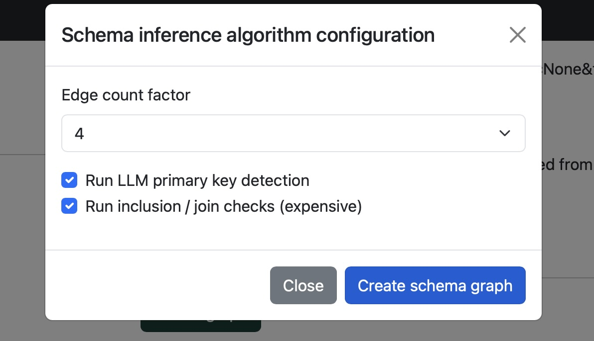

End to end examples
If you have not already signed up, go to https://demo.kurve.ai and create an account. It will be needed to follow along with these tutorials.
Relbench
In the following tutorials we'll be using the relational deep learning benchmark. For the time being we're looking at a subset of the whole benchmark, specifically entity regression and entity classification tasks. Thus far we have not benchmarked link prediction problems yet. The following results were achieved:
- Kurve beats the data scientist 5 out of 8 times.
- Kurve beats RDL (relational deep learning) 5 out of 9 times.
- Kurve beats KumoRFM (in context) 9 out of 9 times.
- Kurve beats KumoRFM (fine tuned) 4 out of 9 times.
Given that a true 1:1 comparison between Kurve and fine tuned models would require customized feature implementations it is impressive that Kurve's out of the box automated feature engineering across multiple tables beats the Data Scientist, RDL, Kumo, and Kumo fine tuned so often. Results for comparison from the KumoRFM paper.
| Problem | Data Scientist | RDL | Kumo (in context) | Kumo (fine tuned) | Kurve | Metric |
|---|---|---|---|---|---|---|
| rel-stack-user-engagement | 90.3 | 90.2 | 87.09 | 90.7 | 90.0 | AUCROC |
| rel-stack-user-badge | 86.2 | 89.86 | 80 | 89.86 | 87.06 | AUCROC |
| rel-avito-user-visits | N/A | 66.2 | 64.85 | 78.3 | 72.23 | AUCROC |
| rel-stack-post-votes | 0.068 | 0.065 | 0.065 | 0.065 | 0.0606 | MAE |
| rel-amazon-user-churn | 67.6 | 70.42 | 67.29 | 70.46 | 69.9 | AUCROC |
| rel-amazon-item-churn | 81.8 | 82.81 | 79.93 | 82.83 | 81.5 | AUCROC |
| rel-hm-user-churn | 69 | 69.88 | 67.71 | 71.23 | 77.2 | AUCROC |
| rel-hm-item-sales | 0.036 | 0.056 | 0.04 | 0.034 | 0.034 | MAE |
| rel-amazon-user-ltv | 13.92 | 14.31 | 16.16 | 14.22 | 6.83 | MAE |
In the next portion we will replicate each of these problems from start to finish with Kurve, which you can follow along with. Each problem is labeled as dataset-problem.
rel-stack
Database Description: Stack Exchange is a network of question-and-answer websites on topics in diverse fields, each site covering a specific topic, where questions, answers, and users are subject to a reputation award process. The reputation system allows the sites to be self-moderating. In our benchmark, we use the stats-exchange site. We derive from the raw data dump from 2023-09-12.
Infer rel-stack schema
- Navigate to the demo homepage.
- Click on the
/usr/local/lake/rel-stacksource and click Create Graph - Execute schema inference with following parameters:

user-engagement
To solve the user-engagement problem we need to assign the Users table as the parent node.
Prepare and execute the compute graph
- Assign the
Userstable as the parent node with a depth of 5. - In the navbar click Actions then Compute Graph.
- Put the following parameters in the compute graph form:
- Name: stackex user engagement
- Parent Node: Users
- Depth limit: 4
- Compute period in days: 3650
- Cut date: 01/01/2020
- Compute graph has target variable / label: yes
- Label period in days: 90
- Label node: Posts
- Label field: Id
- Label operation: bool
- Now that you have the compute graph created and opened, we'll need to add one more node: Votes connected directly to Users.
- Click Actions in navbar
- Click Add Node and select Votes
- Click Actions in navbar
- Click Add Edge and add an edge between Users and the 2nd Votes in the list
- parent node: Users
- parent node field: Id
- child node: Votes (remember the 2nd one listed)
- child node field: UserId
- click Add edge
- Now we need to customize a few things for the data filtering for this problem.
- Click the Users node and click Edit node
- Remove the following fields: Reputation, Views, DownVotes, UpVotes
- Save changes
- Click the Comments node and click Edit node
- Remove the following fields: Score
- Change the prefix to: comm
- Add this SQL to Label / target variable
select UserId, count(*) as had_comment_label from Comments group by UserId - Save changes
- Click the Posts node and click Edit node
- Remove the following fields: Score, ViewCount, AnswerCount, CommentCount, FavoriteCount
- Change the prefix to: post
- Save changes
- Click the Votes node connected directly to Users and click Edit node
- Remove the following fields: BountyAmount
- Change the prefix to: uvote
- Add this SQL to Label / target variable
select UserId, count(*) as had_vote_label from Votes group by UserId - save changes
- Click the Votes node underneath Posts and click Edit node
- Remove the following fields: BountyAmount
- Change the prefix to: subvote
- save changes
- Click the Users node and click Edit node
- Final customization for data prep. This problem only considers "active" users who had engagement in the prior years so do the following.
- Click the Users node and click Edit node
- Add this SQL to Annotations / special selects
select *, date_diff('day', CreationDate, date cut_date) as age_days - Add this SQL to Filters / wheres
where CreationDate < date cut_date - Add this SQL to Post-join annotate
- Add this SQL to Post-join filters
where comm_CreationDate_max is not null or post_CreationDate_max is not null or uvote_CreationDate_max is not null
- Add this SQL to Annotations / special selects
- Click the Users node and click Edit node
- Last but not least, let's edit the compute graph details
- Click Actions in the navbar
- Click Edit compute graph
- Make sure Automate date filters is checked
- Save changes
- Finally, Execute the compute graph:
- Click Actions in the navbar
- Click Execute compute graph
- Navigate to the demo homepage and look under My data sources - there should be and S3 path. Click it and you should see a table called stackex_user_engagement_train.
Load the training data into the notebook
This table stackex_user_engagement_train is the training dataset with all the point-in-time correctness, aggregation, and features solved for and aggregated up to 1/1/2020. The test / holdout set will be aggregated up to 1/1/2021. In Kurve this is as simple as changing the cut date in the UI.
At this point let's open a Jupyter notebook with this notebook.
Once you have that loaded, load in the table by replacing the train_path in your notebook with the actual path you see in your UI for the table.
This final part is very critical for properly handling time / leakage in the training / eval / and test sets.
- Go back to the compute graph and in the navbar click Actions and Compute graph details.
- Edit compute graph and change the cut date to 1/1/2021.
- Save the changes.
- Execute the compute graph.
# CHANGE ME
train_path = 'https://kurve-customers.s3.amazonaws.com/4e1a245a-3065-4600-bb0e-a92e06ee835c/output/user_engage_odsc_eval'
df = pd.read_parquet(train_path)
# Go back and execute the compute graph with 1/1/2021 now
# ONLY after the compute graph has finished executing
# read the same train_path back in under a new variable
# as it will now be aggregated to 1/1/2021.
test = pd.read_parquet(train_path)